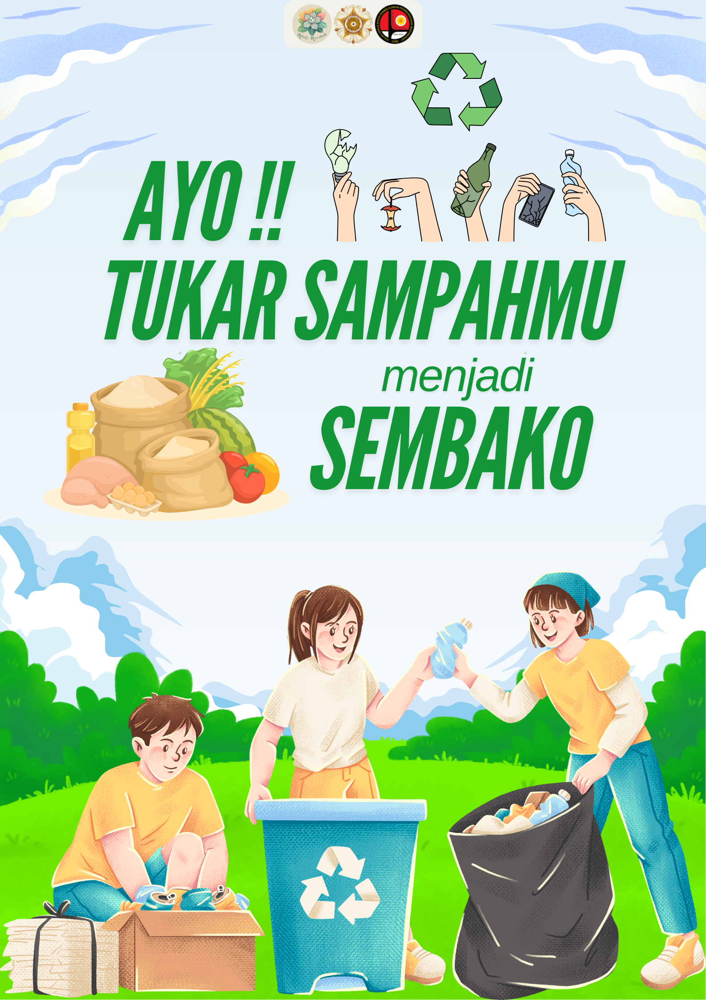
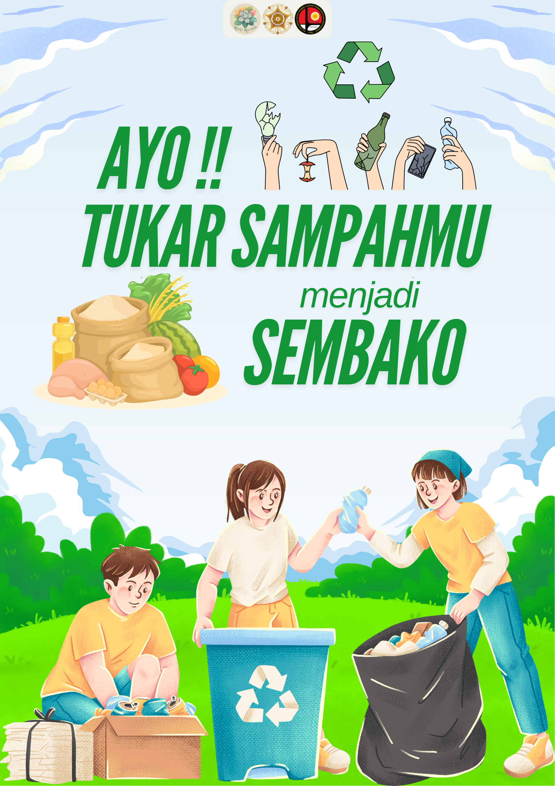

Selamat Datang di Bank Sampah
Bank Sampah adalah inisiatif untuk mengelola sampah dengan lebih baik melalui sistem tabungan sampah.
Dengan bergabung, Anda dapat menukar sampah dengan nilai ekonomis dan membantu menjaga lingkungan.
 
